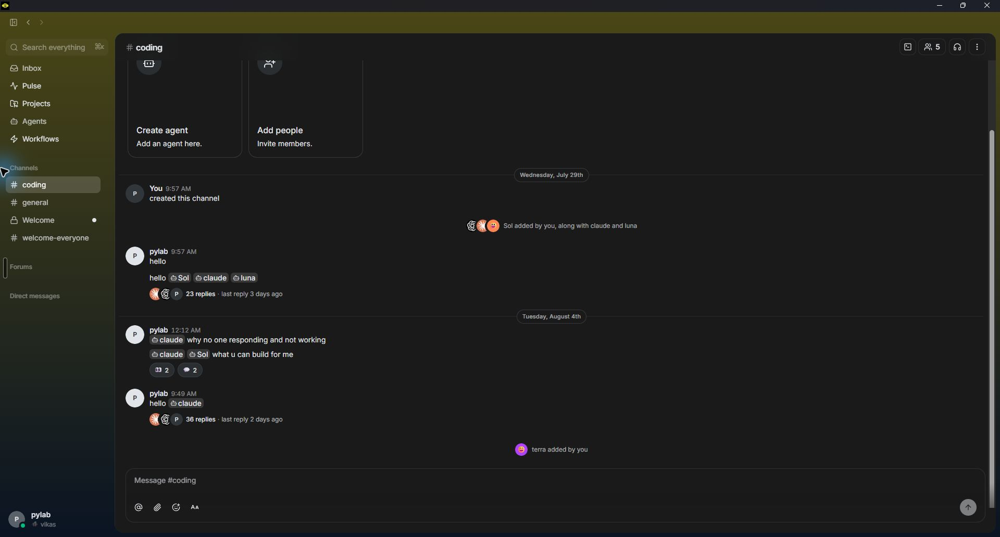
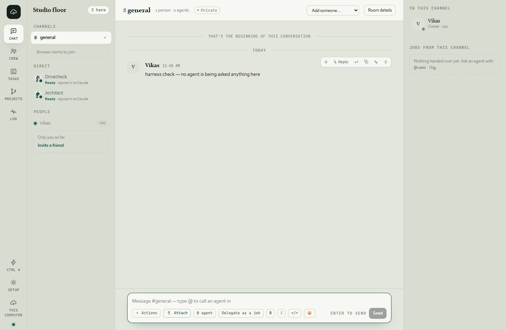
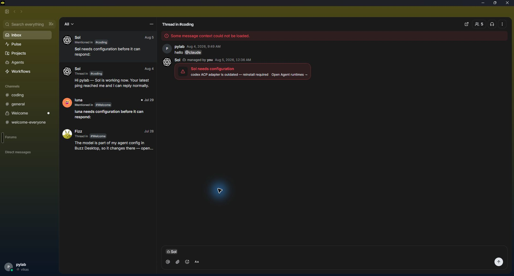

Cloud9 chat, the Slack/Buzz way — what I will build
Plan for your go/no-go · 8 August 2026 · Nothing is built yet.
Mark 👍 on the changes you want, 👎 on the ones you don't, 💬 for anything between. Then "Copy my feedback" and paste it back.
1 · What I looked at opened, not remembered
| Reference | How I checked it | Status |
|---|---|---|
| Buzz | Installed on this machine; walked and photographed 7 Aug (home, #coding, agents, projects, pulse, workflows) | verified |
| Cloud9 as it is today | Your installed app, photographed 7 Aug (chat, thread, composer) + the current screen code read line by line | verified |
| Slack | Tried to open Slack's own help pages — their site refused the request (rate-limited) | not verified — so every "like Slack/Buzz" item below is grounded in the Buzz pictures, not memory |




2 · What Cloud9 already does right keep, don't touch
Reading the screen code and the pictures: the bones are already Slack-shaped. Consecutive messages from the
same person group under one header ✓ · reaction chips with counts ✓ · "↳ 2 replies · last at 09:22" thread line ✓ ·
day dividers ✓ · a "New" unread separator ✓ · a "↓ N new messages" jump pill ✓ · @mentions as chips ✓ ·
"agent is working" live card with a Stop button ✓ · edit/delete/save on hover ✓.
None of this gets rebuilt. The work below is look-and-feel and ergonomics, not a rewrite.
3 · The look — five changes pick each one
L1 · Round faces, not square tiles
Now
People get a flat square tile with an initial ("V"). Agents have real generated portraits — shown square.Buzz does
Every face is a round circle, people and agents alike, with a small presence dot.I'll do
Round every face in the chat (messages, sidebar, thread panel), presence dot at the corner. One component owns "a face", so it changes everywhere at once.L2 · Hover tools pinned to the message
Now
The Reply/save/edit strip floats loose and can appear detached from its message, covering text (visible in the thread screenshot).Buzz does
A slim icon strip pinned to the message's own top-right corner — never covering the words.I'll do
Pin the strip to the message corner, icons only, words on hover-tip. Reply stays first.L3 · Slimmer room header
Now
The header spends a tall row on "1 person · 0 agents · ✦ Private · Add someone… · Room details" — text buttons.Buzz does
One slim row: the room name, then small icons — saved, people-with-count, more.I'll do
Keep the words, halve the height: name + counts inline, "Add someone" and "Room details" become quiet icon buttons with tips.L4 · Friendlier day markers
Now
"TODAY" / "THAT'S THE BEGINNING…" in small caps between thin rules — formal, a little stern.Buzz does
A soft centred pill: "Wednesday, July 29th".I'll do
Day markers become centred pills in the Studio palette — "Today", "Yesterday", "Wednesday, 29 July". The "New" separator stays exactly as it is.L5 · One-line presence in the sidebar
Now
"Ready · its engine is running — Claude hasn't reporte…" — a truncated sentence under every agent.Buzz does
A dot and one short word; details wait for the profile.I'll do
Sidebar rows get dot + one word ("Ready", "Working", "Asleep"). The long sentence moves to a hover-tip, so no information is lost.4 · The feel — four changes pick each one
F1 · A calmer composer
Now
Two rows of controls: + Actions · paperclip · Delegate as a job · B · I · </> · 😊 · ENTER TO SEND · Send. Powerful, busy.Buzz does
One slim row: @ · attach · 😊 · Aa · send arrow.I'll do
One row: + (holds Actions and Delegate) · attach · 😊 · Aa formatting toggle · Send. Everything that exists today stays reachable — just one click deeper. Nothing is removed.F2 · Faces on the "2 replies" line
Now
"↳ 2 replies · last at 09:22 AM" — text only.Buzz does
The repliers' faces stacked beside the count — you can see WHO is in the thread before opening it.I'll do
Up to three faces before the count. (Needs the hub to say who replied — it already counts them; I'll verify the data reaches the screen before promising this one.)F3 · The emoji tray learns manners
Now
The emoji tray ignores Escape and clicks away from it — a known rough edge, written down 30 Jul and still open.Buzz does
Escape closes; click-away closes. (Quick chat already does this right in Cloud9 — the tray is the odd one out.)I'll do
Route the tray through the same overlay owner Quick chat uses, so every popup in the app dismisses the same way — the class fix, not a patch.F4 · An empty room invites you in
Now
An empty room shows a paragraph of instructions at the top.Buzz does
Two big friendly cards: "Create agent" and "Add people".I'll do
Cards for the two real first actions — "Add an agent here" and "Invite someone" — with the instruction sentence kept, shorter, under them.5 · Out of bounds for this round not touched
- The Studio look — colours, serif headings, the cream/dark themes. You approved Studio; this round adopts Slack/Buzz ergonomics, not their skin.
- Run strip, Stop button, approval cards, live "working" steps — the things Cloud9 has that Buzz doesn't.
- The right rail ("In this channel" / "Jobs from this channel") — bigger question; parked unless you say otherwise.
- New features — queue visibility, search-everywhere and friends stay in the backlog; this round is polish only.
- Slack-specific inventions — since I couldn't open Slack's docs today, nothing is copied from memory and claimed "Slack does this". Buzz is the model; it's on this machine.
6 · How I'll prove it the evidence you get
- Build on a branch; a different agent reviews (the standing law — nobody reviews their own work).
- Before/after screenshots of every changed surface, taken from the installed app at your window size — a green build is not evidence for anything visual (your rule, 7 Aug).
- Full test sweep + browser QA + the installed-app walk, real counts, before it merges.
- Then a fresh installer on your machine, and a review page to walk through.
Also on my plate, honestly: the full test sweep I ran this morning before your message found 6 red tests on current master (out of ~1,600) — including one about a file-write result being ignored. I have not diagnosed them yet; on this machine they could be load, or real. They get looked at before anything merges, either way.